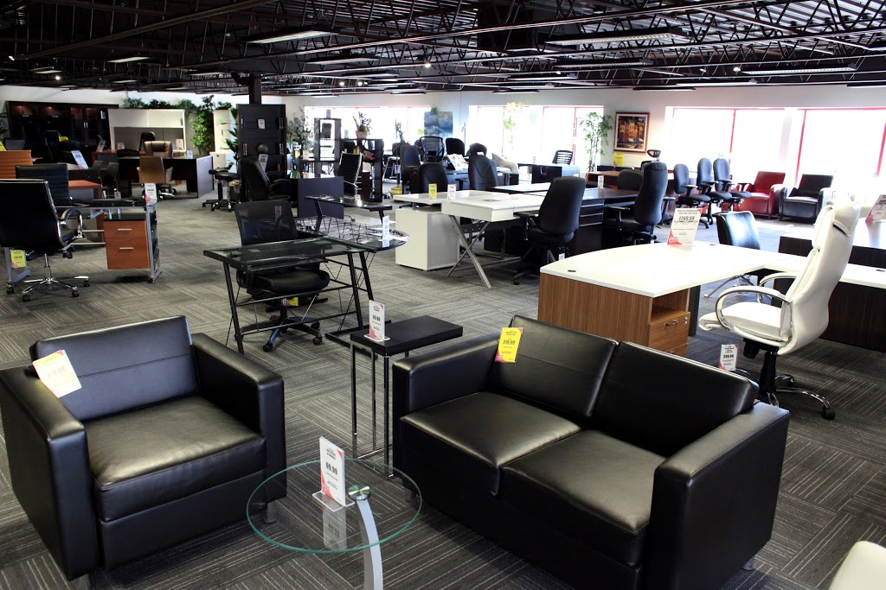

Hi,
I am Kabirat, an energetic and goal-driven person who believes you only tend to bring meaning to your works through purpose.
I hold a bachelor’s Degree in Pharmacy (B.Pharm, OOU, Nigeria). My interest in Data Analytics spurred from my undergraduate thesis where I performed descriptive and correlational analysis to provide facts using SPSS.
Since then, I have been committed to answering questions with quantitative-driven insights.
To match this passion, I have enrolled in reputable e-learning platforms to acquire Data Analytics skills. I am competent in using Microsoft Excel, Microsoft Power BI, Tableau, Microsoft SQL, PostgreSQL, and R programming language.
I am available to use my skills in transforming complicated questions into actionable insights. Please, reach out to me by email.
I look forward to working with you.
This project focuses on data cleaning, analysis, and visualization using Microsoft Excel.
Bicycles are used for commuting worldwide. Cycling to work is common in some places while commuting by cars or buses is the norm elsewhere. This project makes attempt to identify those attributes which are highly determinate for purchasing bikes in Green community.

This project helps Onyx Pie bakery to improve business by gathering insights from the last 2 years of pie sales. DataDNA Dataset challenge -March 2022.
New york city has been described as cultural, financial, media capital influencing entertainment, dining, and tourism. Travelers trust in their host can be a deciding factor on preference between Hotels and Airbnb. This project analyses datasets from Airbnb listings in New york city, estimate the occupncy rate, pricing, and neighbourhood popularity.

This project aims to build a full business analysis dashboard for SampleStore.

The goal of this project is to clean up the NashVille Housing Dataaset using SQL.

This contains all my works using tableau.